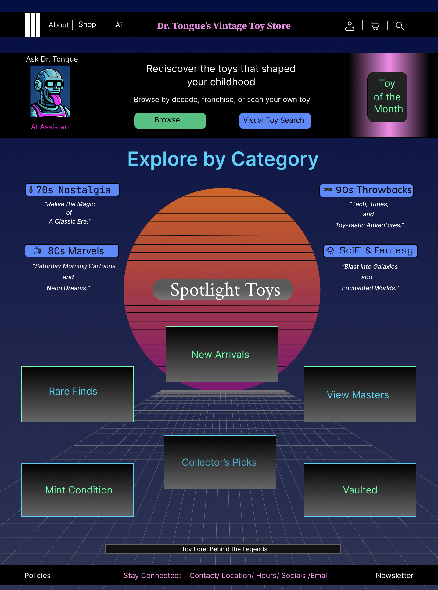
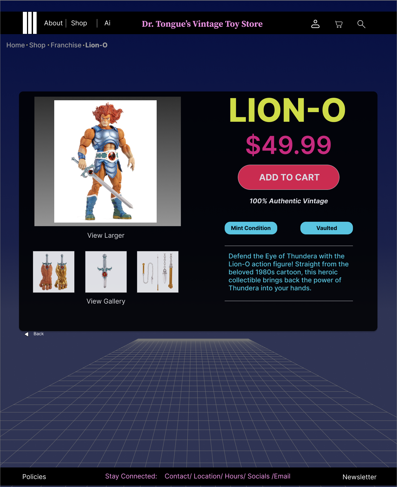
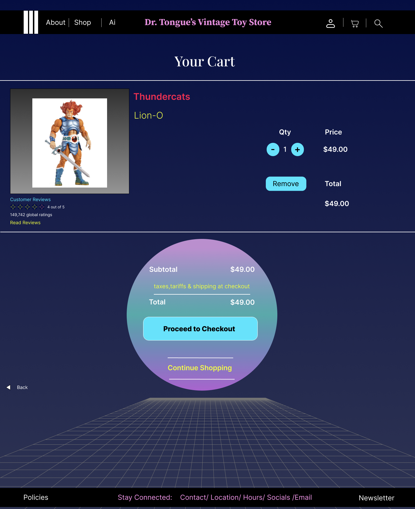

Case Study
Dr. Tongue’s Toys
A desktop e-commerce redesign for a vintage toy retailer focused on improving navigation clarity, product discovery, and purchase confidence while preserving the brand’s playful retro identity.
The Problem
Dr. Tongue’s Toys had a distinctive brand and a strong niche product appeal, but the shopping experience made it harder than it should have been for users to browse categories, compare products, and build confidence toward purchase. Key information competed for attention, navigation patterns felt inconsistent, and product discovery lacked the clarity expected in an e-commerce experience.
The challenge was to redesign the site in a way that improved structure, hierarchy, and usability without losing the playful, nostalgic energy that made the brand memorable.
Goals
- Improve findability through clearer category structure and navigation.
- Reduce browsing friction by making product paths easier to scan and compare.
- Strengthen purchase confidence with clearer hierarchy, pricing visibility, and CTA emphasis.
- Preserve brand personality while making the overall experience more usable and consistent.
Process
My process included usability testing, heuristic evaluation, card sorting, sitemap revision, and wireframing to identify where the shopping experience could become clearer, more intuitive, and more aligned with user expectations.
Research & Insights
Through usability testing, heuristic evaluation, and synthesis work, I identified recurring friction points in how users explored products and made purchase decisions.
Category discovery was harder than expected
Users needed a clearer entry point into product categories and more predictable navigation patterns while browsing.
Visual hierarchy slowed decision-making
Important information such as product details, pricing, and calls to action competed for attention rather than guiding users naturally.
Information architecture needed simplification
Research and card sorting suggested opportunities to reorganize content into a structure that felt more intuitive and scannable.
Trust increases when details are explicit
Clearer product information, pricing visibility, and stronger purchase cues helped support confidence and reduced hesitation.
Information Architecture & UI Direction
The redesign focused on making the shopping experience easier to navigate while maintaining the nostalgic personality of the brand. I used revised category structures, stronger page hierarchy, and clearer CTA placement to support product discovery and reduce friction.



Outcomes & Reflection
This project strengthened my ability to balance strong visual identity with usability. It showed me that e-commerce design works best when brand expression supports clarity rather than competing with it.
If I continued the project, I would validate the revised navigation, product-page hierarchy, and purchase flow through another round of usability testing to measure whether the redesign improved findability, product comparison, and purchase confidence.
Back to Work